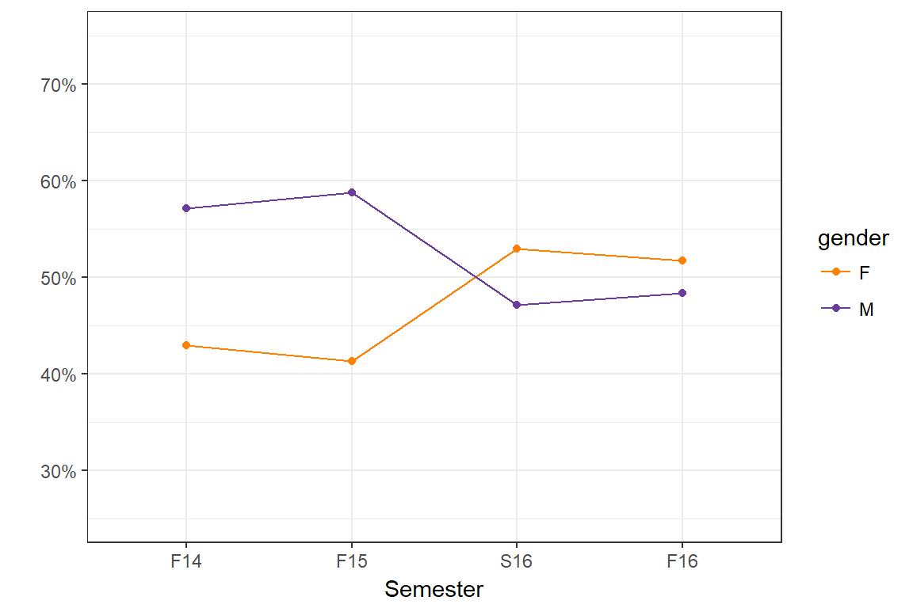
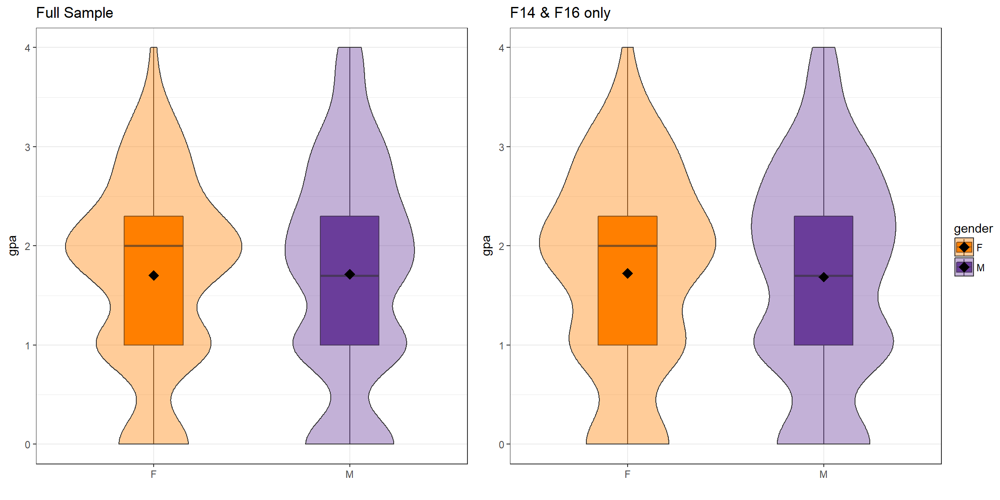
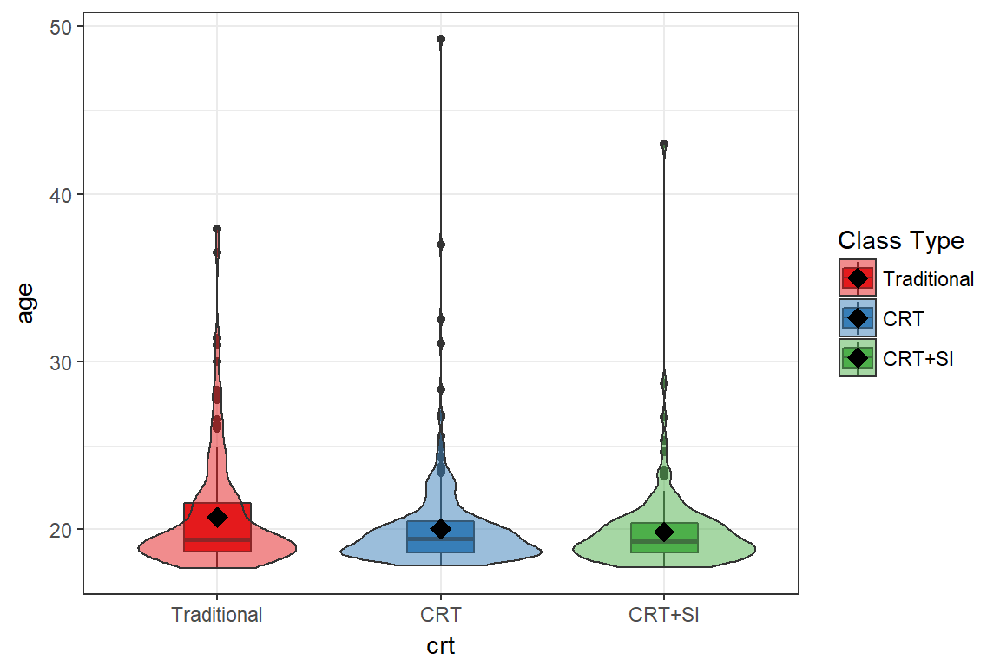
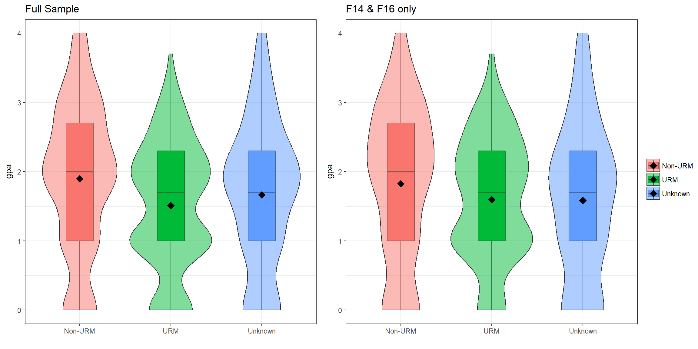
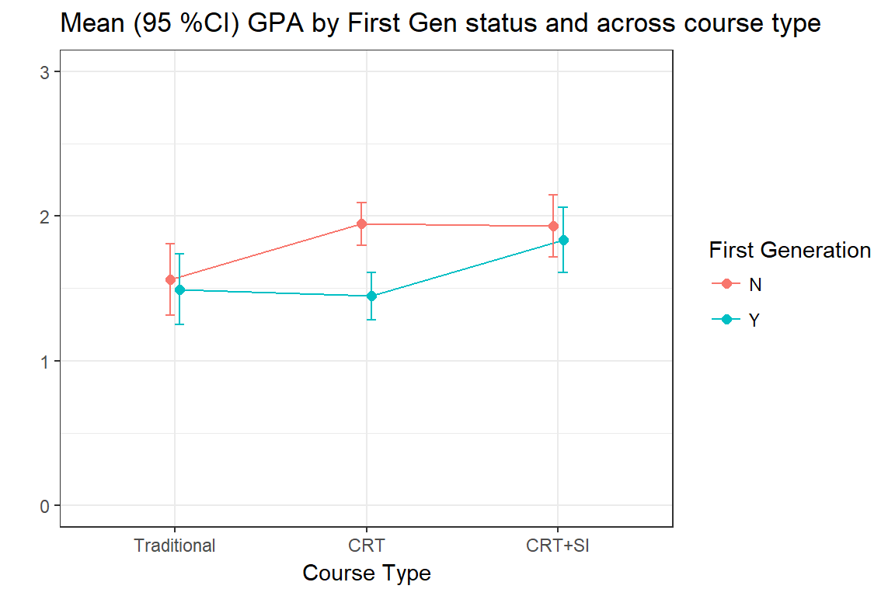
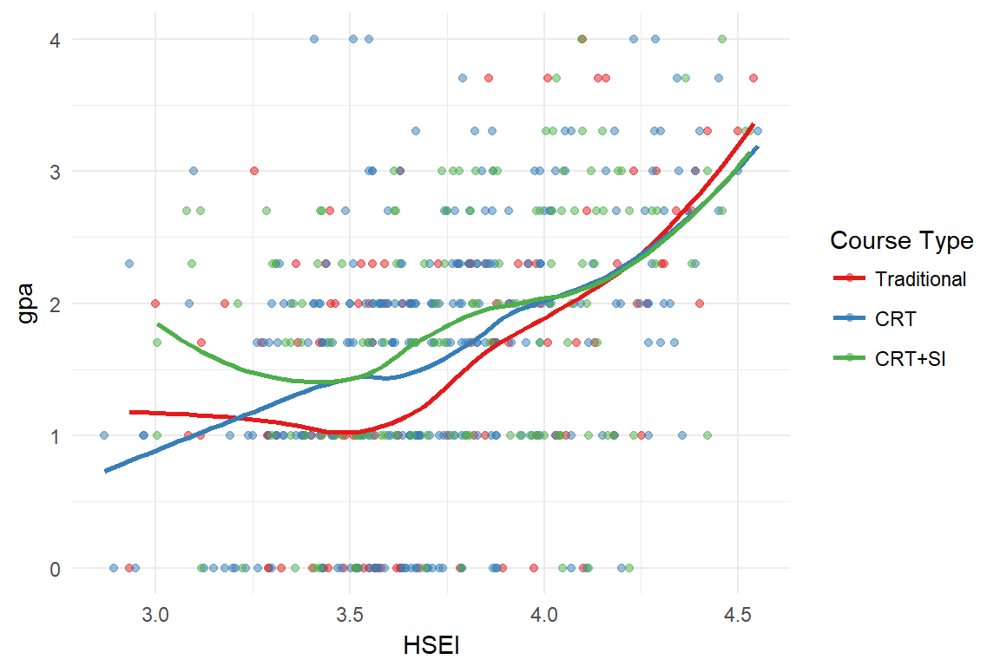

Analysis Overview
To analyze the effect of the course redesign, we consider data from Fall 2014 to Fall 2016, for all sections of Chemistry 111. Students withdrawing or receving an incomplete (W/I) are exluded from this analysis. A repeatable grade is defined as a student reciving a D, D+, F grade, or an unexcused withdrawl WU.
- Examine bivariate associations between outcome measures, covariates and the CRT intervention condition.
- Student and class level characteristics are used as covariates.
- Each predictor is compared to the intervention condition (CRT vs Traditional), and to the outcomes (GPA and receipt of a repeatable grade.)
- Analysis is done on two sets of data samples:
- All terms (Full sample)
- Just F14 and F16 terms only
- Model building - Start with variables that were shown to be bivariately associated with either intervention or outcome, build a multivariable statistical model to assess the effect of the CRT on student performance.
- Use a supervised machine learning technique to identify other key characteristics highly predictive of a student recieving a repeatable grade.
Outcome measurements
1. GPA
Since GPA is being treated as a continuous variable, distributions of GPA are displayed using boxplots with overlaid violin plots. The diamonds represent the average or mean value for that group. Two-sample T-tests and ANOVA tests are used to compare the average GPA across levels of the covariate of interest.
2. Receipt of a repeatable grade
We also dichotomize the grade a student received and create an indicator for whether or not the student received a repeatable grade. This is also called the failure rate in some places in this report.
Where the sample size is large enough, \(\chi^{2}\) tests for equal proportions across two / and multiple groups are conducted, otherwise Fishers Exact Tests are used. Any comparison where a zero cell occurs (a combination of factors that does not exist in the data), no statistical test is conducted.
Performance Outcomes
We examine four semesters of data from a single instructor. One semester of traditional course offering from F14, two semesters of redesigned courses (F15, S16) and one semester of the redesign with an SI enhancement. These are colored in red, blue and green respectively in most plots.
GPA
The overall distribution of gpa for the crt courses has shifted in the positive direction compared to the traditional courses. The mean for Fall 15 and F16 are higher than F14, with S16 closer to F14 than the other redesigned terms. The variance in GPA from the last semester is much higher than the rest, potentially indicating that the effect of SI did not have a uniform impact on increasing the GPA for all students.

DWF rate
The percent of students receiving a repeatable grade has declined over the past four semesters. 
Statistical Comparisons
| Term | Type | Ave. GPA | # DFW | Enrollment | DFW Rate |
|---|---|---|---|---|---|
| F14 | Traditional | 1.53 | 68 | 154 | 0.44 |
| F15 | CRT | 1.78 | 51 | 150 | 0.34 |
| S16 | CRT | 1.65 | 58 | 157 | 0.37 |
| F16 | CRT+SI | 1.89 | 49 | 149 | 0.33 |
- There is a significant improvement in GPA averaged across all redesigned sections compared to traditional (p=0.011).
- There is also a significant improvement in average GPA in F16 compared to F14 (p=0.003).
- The failure rate in F16 is lower than the failure rate in F14, but only marginally so (p=0.093)
- The proportion of repeatable grades does not differ significantly across semesters (p=0.058)
Student Characteristics
Gender
Course Type
Since Fall 14, the gender distribution has become closer to equal, with slightly more females than males since Spring 16. This difference is moderately statistically significant (\(\chi^2_{3}\)=6.5, p=.09).
| gender | F14 | F15 | S16 | F16 |
|---|---|---|---|---|
| F | 66 (42.9%) | 62 (41.3%) | 83 (52.9%) | 77 (51.7%) |
| M | 88 (57.1%) | 88 (58.7%) | 74 (47.1%) | 72 (48.3%) |

Performance - GPA
There is no statistical difference in the average GPA between males and females, regardless of cohort.
| Gender | Mean | SD | p-value |
|---|---|---|---|
| F | 1.70 | 0.96 | 0.88 |
| M | 1.71 | 1.10 |
| Gender | Mean | SD | p-value |
|---|---|---|---|
| F | 1.73 | 1.02 | 0.75 |
| M | 1.69 | 1.08 |

Performance - DFW rate
There is no difference in proportion of males and females getting a repeatable grade on the entire sample, or when using data on the F14 and F16 cohorts only.
| Repeatable Grade | N (%) Female | N(%) Male | p-value |
|---|---|---|---|
| No | 186 (64.6%) | 198 (61.5%) | 0.48 |
| Yes | 102 (35.4%) | 124 (38.5%) |
| Repeatable Grade | N(%) Female | N(%) Male | p-value |
|---|---|---|---|
| No | 92 (64.3%) | 94 (58.8%) | 0.38 |
| Yes | 51 (35.7%) | 66 (41.2%) |
Age
Course Type
Students in F14 were on average 0.68 (0.01, 1.34) years older than those in the two CRT semesters (p=.04), and 0.87 (0.1, 1.65) years older than students in Fall 16 (p=.02).

| Traditional | CRT | CRT+SI | |
|---|---|---|---|
| age | 20.72 (3.37) | 20.04 (2.73) | 19.85 (2.55) |
| diff | lwr | upr | p adj | |
|---|---|---|---|---|
| CRT-Traditional | -0.68 | -1.34 | -0.01 | 0.04 |
| CRT+SI-Traditional | -0.87 | -1.65 | -0.10 | 0.02 |
| CRT+SI-CRT | -0.19 | -0.87 | 0.48 | 0.78 |
Performance - GPA
GPA and age appear to have a non-linear relationship. Zooming in on students under 25, the relationship between age and GPA is decreasing until about 20, then increases afterward.

A linear spline model was fit with a knot at 20 to allow the slopes to differ while controlling for the effect of the course type.
| Estimate | CI | p-value | |
|---|---|---|---|
| Age | -0.090 | (-0.23,0.05) | 0.1951 |
| Over 20 | 0.192 | (-0.01,0.4) | 0.0644 |
| CRT | 0.162 | (-0.05,0.37) | 0.1252 |
| CRT + SI | 0.342 | (0.1,0.58) | 0.0052 |
Under 20, there is a very slight (\(\beta=-0.09\)) and non-significantly different from zero downward trend in GPA as age increases. For each year older than 20 a student is, the average GPA increases by 0.19 (p=.06). Students in the CRT + SI course have on average 0.34 higher GPA compared to students in the traditional class (p=.005).
An interaction term between age and course type was tested but found to be non-significant. This indicates that the intervention has a similar positive effect on a student’s GPA regardless of their age.
Performance - DFW rate [[NOT DONE YET]]

| Traditional | CRT | CRT+SI | |
|---|---|---|---|
| age | 20.72 (3.37) | 20.04 (2.73) | 19.85 (2.55) |
Sumary * CRT has a positive effect on GPA and DWF rate after controlling for age.
Race / Ethnicity
The demographic shift across all chem classes is displayed in the Exploratory Analysis document. How does this compare to the campus-wide shift?

There are too many ethnicities with low sample sizes to compare statistically. Here we just look at two smaller groupings of race/ethnicity.
Underrepresented Minority (URM)
- Non-URM: Asian, NHOPI, White
- URM: Black, HL
- UNK: Mult, Unk
CRT vs. Traditional
Full Sample The distribution of URM across the past four terms has changed significantly. 
F14 & F16 only No statistical difference in the distribution of proportions between years.
Performance - GPA
Full Sample URM students have significantly lower GPA (.38 lower) compared to non-URM students. The GPA for students with unknown URM status have marginally lower (.23) GPA compared to non-URM students.

F14 & F16 only URM students have marginally lower GPA (.23 lower) on average compared to non-URM students. The GPA for students with unknown URM status is not different than the average GPA for non-URM students.
Performance - DWF rate
Full Sample There is a statistical difference in DWF rate by URM status in the full cohort.
F14 & F16 only There is no difference in dwf rate by URM status comparing F14 to F16 only.
Students of Color (SOC)
- Non-SOC= White
- SOC = AIAN, Asian, Black, HL, NHOPI
- Multiple/Mixed = Multi, Unk
CRT vs. Traditional
Full Sample The distribution of SOC across the past four terms has changed significantly (p=.01) 
F14 & F16 only No statistical difference in the distribution of proportions between F14 & F16.
Performance - GPA
Full Sample
Non-SOC students have a significantly higher GPA compared to students of color (.39 higher),and students identifying as Multiple/Mixed ethnities (.27 higher). 
F14 & F16 only Only comparing F14 and F16, non-SOC students have a significantly higher GPA compared to students of color (.28 higher), and marginally higher than those from Multiple/Mixed ethnicities (.29 higher).

Performance - DWF rate
Full Sample There is strong statistical difference in DWF rate by SOC status in the full cohort.
F14 & F16 only There is a marginal difference in dwf rate by SOC status when looking at F14 and F16 only.
Student Groups
EOP
The number of EOP students is too small to make accurate comparisons.
CRT vs. Traditional
Full Sample The distribution of EOP student status has not changed significantly.
Performance - GPA
Full Sample There is no significant difference in average GPA for students in EOP compared to non-EOP students. 
F14 & F16 only EOP students did significantly better compared to non-EOP students when looking at the F14 and F16 cohorts only.

Performance - DWF rate
Full Sample There is no difference in the % of repeatable grades between EOP and non-EOP students.
F14 & F16 only There is no difference in the % of repeatable grades between EOP and non-EOP students.
Any formal student group (FSG)
First Generation
CRT vs. Traditional
Full Sample The distribution of first generation student status has not changed significantly across the past four terms.
Performance - GPA
Full Sample First generation students have significantly lower GPA compared to non-first gen students. 
F14 & F16 only When comparing the F14 and F16 cohorts only, this difference disappears.

Performance - DWF rate
Full Sample A significantly higher proportion of first generation students received repeatable grades.
F14 & F16 only Again, this difference disappears when considering only F14 vs F16 cohorts.
College Prep
This section examines the relationship between the amount and type of college prep courses (HS and college) a student has at the time of admission, and the student’s gpa in Chem 111.
Admissions Index (HS Eligibility)
Average admission index is marginally statistically different across years.
GPA
In the following scatterplots, each dot represents one student. Due to the discrete nature of gpa and number of classes, many points are overlaid on the same spot. So the darker the point, the more students are represented there.

Admissions index does not have a strictly linear relationship with GPA. A standard linear model is not appropriate, a spline model with a knot around 3.5 should be used instead. Do this
DFW

There is a strong relationship between admissions index and whether or not the student will pass the class.
ELM Status
EPT Status
GE Status
Bivariate Summary
Factors that were associated with GPA or passing the class
- Admissions index - but not linearly
Comparing the entire cohort to F14 and F16 only – often differences seen in the entire cohort were not seen when only considering the F14 and F16 cohorts only. Even though there is only one spring term included, this may be an indication of a “semester” effect that we have seen evidence of in other places.
Multivariate modeling
GPA - recap of relationship
 For those under 25, after accounting for a linear effect of age, the CRT significantly improves GPA.
For those under 25, after accounting for a linear effect of age, the CRT significantly improves GPA.
HS eligibility [In progress]
Fit a linear spline model, with a knot at 3.75. That is, two linear models with differing slopes.
Interaction between admissions index and CRT – allow there to be separate slopes between CRT groups in both high and low admission index areas. – in other words– does the CRT group change the relationship between admissions index and GPA?
Notes
can we show that SI is the cause of the reduction of the GAP between first gen and/or URM students.
- DFW rate as a function of attendance
- HS eligibility vs. SI visits
add logistic regression of repeatable grade vs crt
- don’t forget to add difference between chem performance and other classes
plot gap in gpa and dwf across term
CART - Predicting a failing grade.
Work in progress…